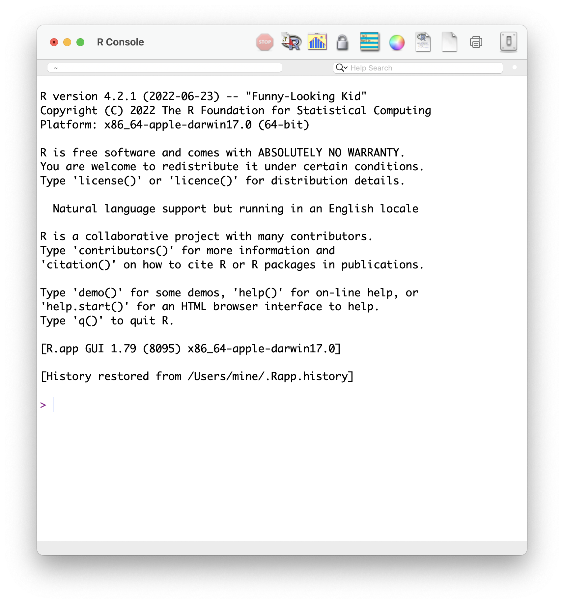
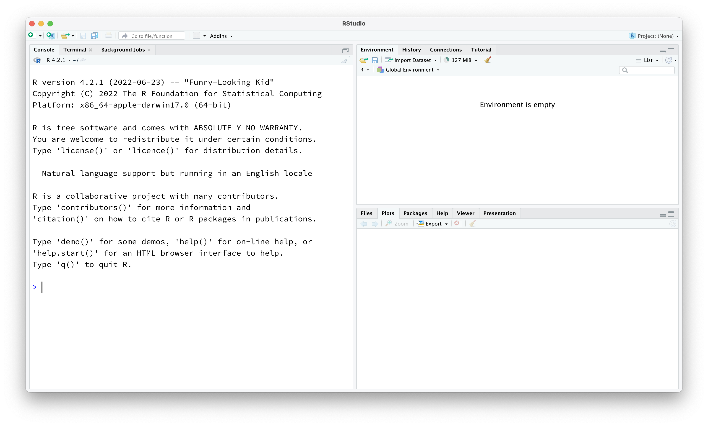

Welcome to INFO 2950
Lecture 1
Cornell University
INFO 2950 - Spring 2023
1/24/23
Agenda
Agenda
- Staff intros
- What is data science?
- Software
- Application exercise
- What is INFO 2950?
- This week’s tasks
Staff intros
Meet the instructor
Dr. Benjamin Soltoff
Lecturer in Information Science
Gates Hall 216

Meet the course team
- TBD
Meet each other!
03:00
What is data science?
What is data science?
Data science is an exciting discipline that allows you to turn raw data into understanding, insight, and knowledge.
[A]n interdisciplinary field that uses scientific methods, processes, algorithms and systems to extract or extrapolate knowledge and insights from noisy, structured and unstructured data, and apply knowledge from data across a broad range of application domains1
We’re going to learn to do this in a
tidyway – more on that later!This is a course on introduction to data science, with an emphasis on statistical thinking.
Software
Excel - not…

R
RStudio
Data science life cycle
Data science life cycle

Import

Tidy + transform

Visualize

Model

Understand


# A tibble: 5 × 2
date season
<chr> <chr>
1 23 January 2017 winter
2 4 March 2017 spring
3 14 June 2017 summer
4 1 September 2017 fall
5 ... ... Communicate

Understand + communicate

Program

Let’s dive in!
Application exercise
Or more like demo for today…
Course overview
Homepage
https://info2950.infosci.cornell.edu/
- All course materials
- Links to Canvas, GitHub, RStudio Workbench, etc.
- Let’s take a tour!
Course toolkit
All linked from the course website:
- GitHub organization: github.coecis.cornell.edu/info2950-s23
- RStudio Workbench: rstudio-workbench.infosci.cornell.edu/
- Communication: GitHub Discussions
- Assignment submission and feedback: Gradescope
Important
Make sure you can access RStudio Workbench before lab on Friday.
Activities: Prepare, Participate, Practice, Perform
Prepare: Introduce new content and prepare for lectures by completing the readings
Participate: Attend and actively participate in lectures and labs, office hours, team meetings
Practice: Practice applying statistical concepts and computing with application exercises during lecture, graded for completion
Perform: Put together what you’ve learned to analyze real-world data
- Lab assignments x TODO (first individual, later team-based)
- Homework assignments x TODO (individual)
- Three take-home exams
- Team project presented in the last lab session
Cadence
- Application exercises: Complete within 24 hours of the end of class
- Labs: Start and make large progress on Friday in lab section, finish up by Monday 11:59pm the following week
- HWs: Posted Thursday morning, due following Wednesday 11:59pm
- Exams: Exam released Thursday morning, no lab on Friday of that week, due Monday 11:59pm
- Project: Deadlines throughout the semester, with some lab and lecture time dedicated to working on them, and most work done in teams outside of class
Teams
- Team assignments
- Assigned by course staff
- Application exercises, labs, and project
- Peer evaluation during teamwork and after completion
- Expectations and roles
- Everyone is expected to contribute equal effort
- Everyone is expected to understand all code turned in
- Individual contribution evaluated by peer evaluation, commits, etc.
Grading
| Category | Percentage |
|---|---|
| Homework | 30% |
| Labs | 15% |
| Project | 20% |
| Exams | 25% |
| Application Exercises | 10% |
See course syllabus for how the final letter grade will be determined.
15 minute rule
Support
- Attend office hours
- Ask and answer questions on the discussion forum
- Reserve email for questions on personal matters and/or grades
- Read the course support page
Announcements
- Posted on Canvas (Announcements tool), be sure to check regularly (or forward announcements to your email)
- I’ll assume that you’ve read an announcement by the next “business” day
Diversity + inclusion
- I want you to feel like you belong in this class and are respected
- We are committed to full inclusion in education for all persons
- If you feel that we have failed these goals, please either let us know or report it, and we will address the issue
- I (like many people) am still in the process of learning about diverse perspectives and identities. If something was said in class (by anyone) that made you feel uncomfortable, please talk to me about it.
Accessibility
I want this course to be accessible to students with all abilities. Please feel free to let me know if there are circumstances affecting your ability to participate in class.
Course policies
Late work, waivers, regrades policy
- We have policies!
- Read about them on the course syllabus and refer back to them when you need it
Collaboration policy
Only work that is clearly assigned as team work should be completed collaboratively.
Homeworks must be completed individually. You may not directly share answers / code with others, however you are welcome to discuss the problems in general and ask for advice.
Exams must be completed individually. You may not discuss any aspect of the exam with peers. If you have questions, post as private questions on the course forum, only the teaching team will see and answer.
Sharing / reusing code policy
We are aware that a huge volume of code is available on the web, and many tasks may have solutions posted
Unless explicitly stated otherwise, this course’s policy is that you may make use of any online resources (e.g. RStudio Community, StackOverflow, etc.) but you must explicitly cite where you obtained any code you directly use or use as inspiration in your solution(s).
Any recycled code that is discovered and is not explicitly cited will be treated as plagiarism, regardless of source
Academic integrity
- A student shall in no way misrepresent his or her work.
- A student shall in no way fraudulently or unfairly advance his or her academic position.
- A student shall refuse to be a party to another student’s failure to maintain academic integrity.
- A student shall not in any other manner violate the principle of academic integrity.
Most importantly!
Ask if you’re not sure if something violates a policy!
This week’s tasks
- Log in to Cornell’s GitHub - you already have an account!
- Complete the Getting to know you survey if you haven’t yet done so!
- Read the syllabus
Something personal